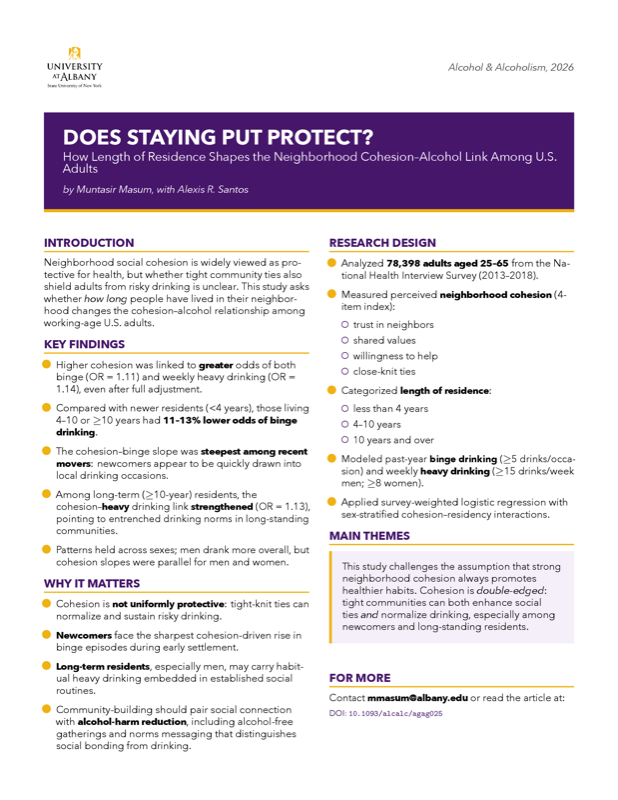
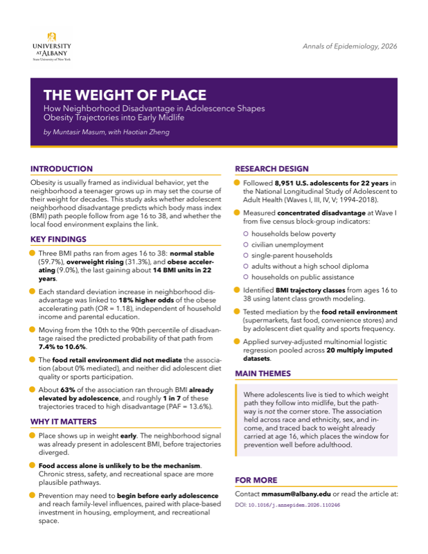

Publications
Peer-reviewed work on alcohol, social determinants, and population health. Author name in bold.
Complete list — NCBI MyBibliography & ORCID ↗Adolescents in more disadvantaged neighborhoods more often followed an obese-accelerating BMI trajectory into early midlife.
Neighborhood cohesion protects more against risky drinking the longer adults stay in place.
Both frequent and binge drinking independently tracked with higher hypertension prevalence nationwide.
Employment buffered the elevated mortality risk linked to drinking among U.S. women.
A widely-used open resource harmonizing age- and sex-disaggregated COVID-19 cases and deaths across 100+ countries.
One-page, jargon-free summaries of published work — what the study asked, what it found, and why it matters.

Does staying put protect?
How length of residence shapes the neighborhood cohesion–alcohol link among U.S. adults.

The weight of place
How neighborhood disadvantage in adolescence shapes obesity trajectories into early midlife.